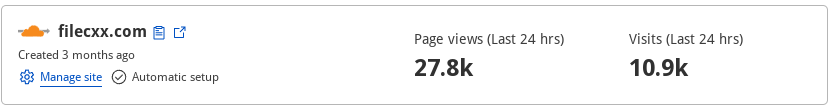

| Возможности | Минимальная версия |
| Протокол HTTP, HTTPS (основные функции, такие как gzip, resumable, multi-connections, не будут перечислены.) | 1.0 |
| Протокол FTP, FTPS | 1.0 |
| Адрес Magnet, HASH | 1.0 |
| BitTorrent | 1.0 |
| Другие пользовательские протоколы, такие как thunder, flashget, qqdl | 1.0 |
| Адрес в формате JSON | 1.0 |
| Стриминговая задача m3u8 | 1.0 |
| Расшифровка потоковой задачи AES-128 (расшифровка SAMPLE-AES пока не поддерживается) | 1.0 |
| Файл cookie HTTP, заголовок, пользовательский агент с пользовательской настройкой | 1.0 |
| Ограничение раздачи торрентов | 1.0 |
| Динамическое редактирование конфигурации задачи передачи | 1.0 |
| Антиличи | 1.0 |
| Обновить просроченный адрес | 1.0 |
| Каталоги | 1.0 |
| Ограничить скорость загрузки, раздачи | 1.0 |
| Создание пользовательского адреса (filec, fileu) | 1.0 |
| Управление прокси | 1.0 |
| Настроить фильтр | 1.0 |
| Управление трекерами | 1.0 |
| Сведения о задаче | 1.0 |
| Экспортировать торрент из задачи | 1.0 |
| Несколько языков | 1.0 |
| Очередь или Настройка неограниченного параллелизма | 1.0 |
| Интеграция с браузером Chrome | 1.0 |
| Интеграция с браузером Firefox | 1.0 |
| Захват видео, аудио с веб-страницы | 1.0 |
| Найдите все magnet'ы на веб-странице | 1.0 |
| Инструмент перевода | 1.0 |
| Инструмент HTTP | 1.0 |
| Инструмент для кодирования/декодирования URI | 1.0 |
| Инструмент для кодирования/декодирования Base64 | 1.0 |
| Инструмент проверки регулярных выражений | 1.0 |
| Создать торрент | 1.0 |
| Инструмент торрент в magnet | 1.0 |
| Инструмент Magnet в торрент | 1.0 |
| Инструмент слияния файлов | 1.0 |
| Статистика | 1.0 |
| Download all links from webpage | 1.6 |
| SSH, SFTP protocol | 2.0 |
| curl, wget, aria2, axel command line | 2.0 |
| WebDAV protocol | 2.0 |
| Upload file | 2.0 |
| Upload directory | 2.0 |
| Download directory | 2.0 |
| Full featured WebDAV(s) file manager | 2.0 |
| Full featured FTP(s) file manager | 2.0 |
| Full featured SSH(sftp) file manager | 2.0 |
| File browser persistent caches | 2.0 |
| Site rules | 2.1 |
| Checksum tool | 2.3 |
| Remote download | 2.6 |
Please let us know if you want to add your review to the list.
